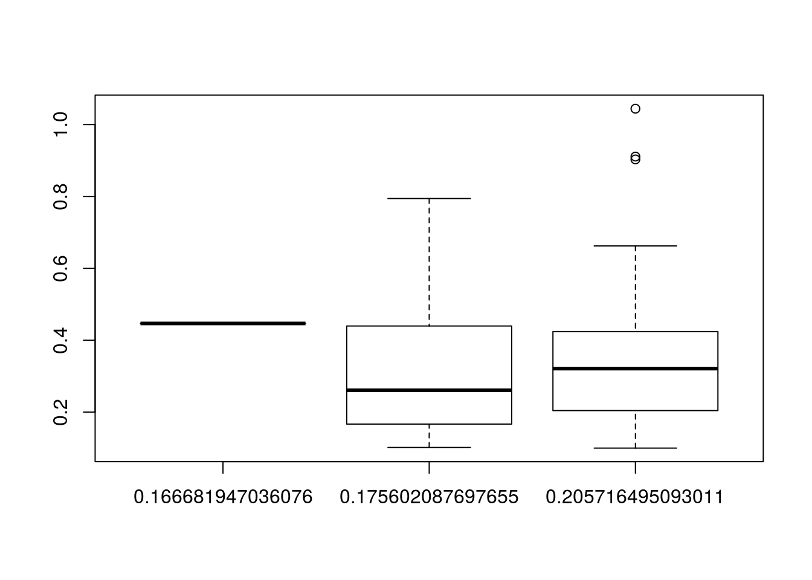
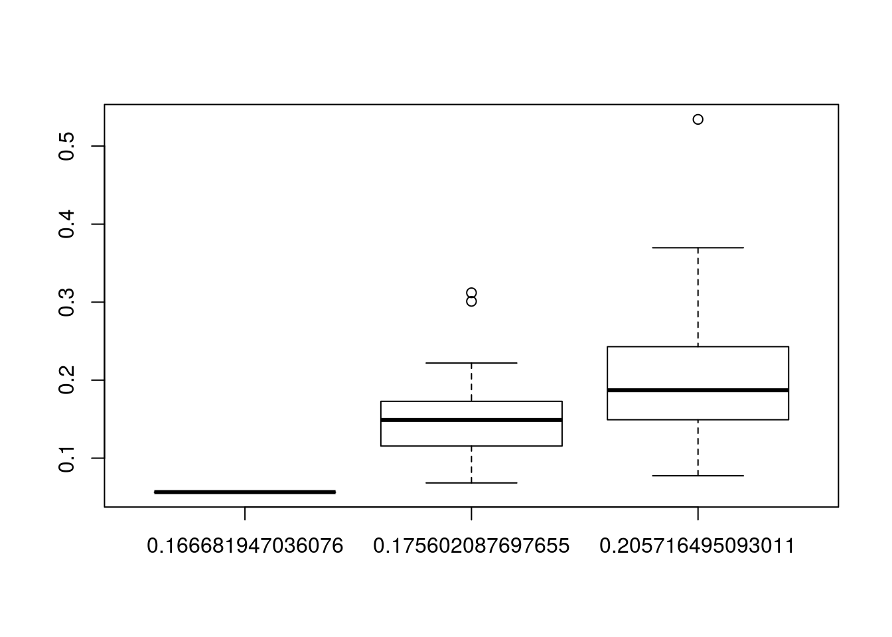

I look at the variance estimates when \(n = 6\) vs pca when \(n = 430\).
When you have only \(n = 6\) samples, but there are actually around \(q = 15\) unobserved confounders, we can only estimate max of 3 or 4 of these, so there is a lot of extra variability that we are not accounting for. If we do PCA on the full GTEx data and include the estimated number of confounders from the full GTEx data, we get much smaller estimates of the variances. But if we use the number of confounders estimated from the smaller data (where \(n = 6\)), we get variance estimates at about where the ols estimates are on average. The variance inflation term tends to estimate the variances too large.
library(tidyverse)## Loading tidyverse: ggplot2
## Loading tidyverse: tibble
## Loading tidyverse: tidyr
## Loading tidyverse: readr
## Loading tidyverse: purrr
## Loading tidyverse: dplyr## Conflicts with tidy packages ----------------------------------------------## filter(): dplyr, stats
## lag(): dplyr, statsset.seed(821)
mat <- t(as.matrix(read.csv("../../reproduce_ruv3/Output/gtex_tissue_gene_reads_v6p/muscle.csv",
header = TRUE)[, -c(1,2)]))
dout <- seqgendiff::poisthin(mat = mat, nsamp = nrow(mat), ngene = 1000, prop_null = 1,
gselect = "mean_max")
Y <- log2(dout$Y + 1)
X <- dout$X
num_sv <- sva::num.sv(t(Y), X)
sig_full <- vicar::pca_naive(Y = Y, r = num_sv + 1)$sig_diag
sig_dat <- data_frame(sig_full = sig_full)
sig_dat$sig_one <- vicar::pca_naive(Y = Y, r = 1)$sig_diag
sig_dat$sig_two <- vicar::pca_naive(Y = Y, r = 2)$sig_diag
sig_dat$sig_three <- vicar::pca_naive(Y = Y, r = 3)$sig_diag
sig_dat$sig_four <- vicar::pca_naive(Y = Y, r = 4)$sig_diag
sig_dat$sig_five <- vicar::pca_naive(Y = Y, r = 5)$sig_diag
meddat <- apply(sig_dat, 2, median)
itermax <- 100
med_sims <- rep(NA, length = itermax)
numsv_sims <- rep(NA, length = itermax)
xi_sims <- rep(NA, length = itermax)
for (index in 1:itermax) {
which_sub <- sort(c(sample((1:nrow(Y))[X[, 2] == 1], size = 3),
sample((1:nrow(Y))[X[, 2] == 0], size = 3)))
Ysub <- Y[which_sub, ]
Xsub <- X[which_sub, ]
num_sv_sub <- sva::num.sv(t(Ysub), Xsub)
mout <- vicar::mouthwash(Y = Ysub, X = Xsub, k = num_sv_sub)
numsv_sims[index] <- num_sv_sub
med_sims[index] <- median(mout$sig_diag)
xi_sims[index] <- mout$xi
}It seems that the non-inflated normal does better at estimating median of the variances.
library(tidyverse)## Loading tidyverse: ggplot2
## Loading tidyverse: tibble
## Loading tidyverse: tidyr
## Loading tidyverse: readr
## Loading tidyverse: purrr
## Loading tidyverse: dplyr## Conflicts with tidy packages ----------------------------------------------## filter(): dplyr, stats
## lag(): dplyr, statssimsdat <- data_frame(xi = xi_sims, med_sig = med_sims, numsv = numsv_sims)
simsdat$med_sig_full <- meddat[simsdat$numsv + 2]
simsdat$adjusted_sig <- simsdat$xi * simsdat$med_sig
boxplot(simsdat$adjusted_sig ~ simsdat$med_sig_full)
boxplot(simsdat$med_sig ~ simsdat$med_sig_full)
tabdat <- simsdat %>% group_by(numsv) %>%
summarize(mean_adjusted = mean(adjusted_sig), mean_sig = mean(med_sig))
tabdat$full <- c(meddat[sort(unique(simsdat$numsv)) + 2])
tabdat## # A tibble: 3 × 4
## numsv mean_adjusted mean_sig full
## <dbl> <dbl> <dbl> <dbl>
## 1 1 0.3494 0.20501 0.2057
## 2 2 0.3135 0.15300 0.1756
## 3 3 0.4466 0.05646 0.1667summary(simsdat$xi)## Min. 1st Qu. Median Mean 3rd Qu. Max.
## 0.355 1.050 1.610 2.000 2.410 7.910sessionInfo()## R version 3.3.2 (2016-10-31)
## Platform: x86_64-pc-linux-gnu (64-bit)
## Running under: Ubuntu 16.04.2 LTS
##
## locale:
## [1] LC_CTYPE=en_US.UTF-8 LC_NUMERIC=C
## [3] LC_TIME=en_US.UTF-8 LC_COLLATE=en_US.UTF-8
## [5] LC_MONETARY=en_US.UTF-8 LC_MESSAGES=en_US.UTF-8
## [7] LC_PAPER=en_US.UTF-8 LC_NAME=C
## [9] LC_ADDRESS=C LC_TELEPHONE=C
## [11] LC_MEASUREMENT=en_US.UTF-8 LC_IDENTIFICATION=C
##
## attached base packages:
## [1] stats graphics grDevices utils datasets methods base
##
## other attached packages:
## [1] dplyr_0.5.0 purrr_0.2.2 readr_1.0.0 tidyr_0.6.1
## [5] tibble_1.2 ggplot2_2.2.1 tidyverse_1.1.1
##
## loaded via a namespace (and not attached):
## [1] Rcpp_0.12.11 plyr_1.8.4 forcats_0.2.0 tools_3.3.2
## [5] digest_0.6.12 jsonlite_1.3 lubridate_1.6.0 evaluate_0.10
## [9] nlme_3.1-131 gtable_0.2.0 lattice_0.20-34 psych_1.6.12
## [13] DBI_0.6 yaml_2.1.14 parallel_3.3.2 haven_1.0.0
## [17] xml2_1.1.1 stringr_1.2.0 httr_1.2.1 knitr_1.15.1
## [21] hms_0.3 rprojroot_1.2 grid_3.3.2 R6_2.2.0
## [25] readxl_0.1.1 foreign_0.8-67 rmarkdown_1.3 modelr_0.1.0
## [29] reshape2_1.4.2 magrittr_1.5 backports_1.0.5 scales_0.4.1
## [33] htmltools_0.3.5 rvest_0.3.2 assertthat_0.2.0 mnormt_1.5-5
## [37] colorspace_1.3-2 stringi_1.1.2 lazyeval_0.2.0 munsell_0.4.3
## [41] broom_0.4.2This site was created with R Markdown